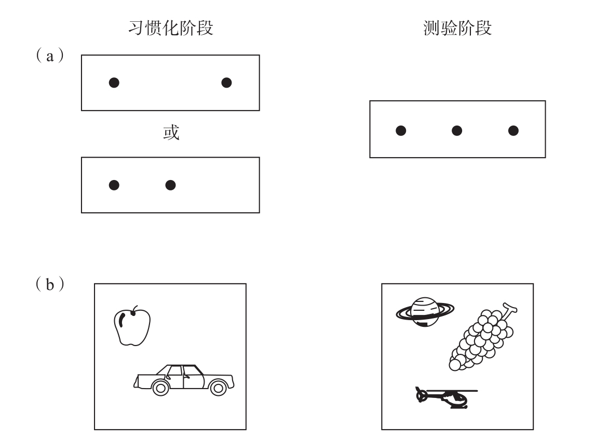

前文所描述的实验都认为，儿童获得“数量守恒”能力的时间早于我们以往所认为的年龄，这对皮亚杰所提出的数字能力发展时间表提出了挑战。但是，它们真的驳倒了整个建构主义吗？并非如此。皮亚杰的理论比我在前文中以简要的文字所描述的要巧妙得多，他的理论提供了多种途径来包容上述研究结果。
比如，他可以这样反驳：改动过的实验任务从原始的数量守恒测试中去除了一些容易引发矛盾的线索，它们因此变得过于简单。皮亚杰十分清楚他的测试会对儿童产生误导，事实上，这种误导是有意设置的，这样物品摆放长度就会与物品数量产生矛盾。在他看来，儿童只有在以纯粹的逻辑为基础判断出哪排物品的数量较多，反思已经发生的操作的逻辑后果，并且不因物品摆放长度的变化或实验者提问的措辞方式等无关变化而分心时，他们才算是真正掌握了算术的概念性基础。皮亚杰认为，抵抗误导线索的能力也是数字概念认知的重要组成部分。
皮亚杰还可以这样解释：选择更多数量的糖果不需要对数量有概念认知，感知运动协调就能使儿童找出更多的一堆并指向它。他的研究自始至终不停地强调儿童的感觉运动智能，所以他会很高兴地接受儿童在早期发展出了“选大”策略。他仍然可能坚持认为，使用这种策略并不需要对其逻辑基础有所理解；只有在更晚的时候，儿童才能反思他们的感觉运动能力，并发展出对数量的更抽象理解。在听说奥托·克勒对鸟和松鼠进行数量知觉的研究时，皮亚杰所做出的反应，就是这种态度的典型体现。他相信动物能够习得“感知运动数量”，而不是习得对计算概念的理解。
在20世纪80年代之前，这些挑战皮亚杰理论的实验并没有真正触及他的核心假设：婴儿没有真正的数量概念。毕竟，参加梅勒和贝弗弹珠实验的儿童中，最小的也已经2岁了。在这种背景下，对婴儿的科学研究突然具有十分重要的理论意义。是否有研究能够证明，在通过与环境的互动获取抽象概念之前，1岁以下的婴儿就已经掌握了数量概念的某些方面呢？答案是肯定的。20世纪80年代，研究者发现，6个月大的婴儿，甚至新生儿，都具有数量能力。
显然，为了揭示在如此早期的年龄阶段所具有的数量能力，运用语言提问是行不通的。因此，科学家们依靠新异事物对婴儿的吸引力来完成这类实验。家长们都知道，当婴儿一次又一次地看到同一件玩具时，最终会对这件玩具失去兴趣。这时，引入一个新玩具可以重新唤起婴儿的兴趣。这说明婴儿可以注意到第一件玩具和第二件玩具之间的区别，研究人员在实验室严格控制的环境下重复上述观察时，也得到了同样的结论。这项技术可以拓展到关于婴儿的所有类型的问题。也正是运用这种方法，研究者已经可以证明，在生命的早期，婴儿甚至新生儿，能够感知颜色、形状、大小之间的不同，更重要的是，他们也能感知数量之间的差异。
1980年在美国宾夕法尼亚大学普伦蒂斯·斯塔基（Prentice Starkey）的实验室进行的一项实验，首次证明了婴儿能够识别小数量7。72个16至30周大的婴儿参加了测试。每一个婴儿都坐在母亲的腿上，面对一个可以投影幻灯片的屏幕（见图2-2）。一个摄像机对准婴儿的眼睛，来记录他们的注视轨迹，这样，一个不了解实验具体条件的助手就能够准确地计算出婴儿注视每张幻灯片的时间。当婴儿注视其他地方时，新的幻灯片就会出现在屏幕上。起初，幻灯片的内容基本上是一致的：2个横向排列的黑点，随着实验轮次的不同，两点之间的距离会有所变化。在实验过程中，婴儿对这些重复出现的刺激的关注会越来越少。这时，幻灯片就会毫无征兆地换成由3个黑点组成的图像。婴儿会立即给予这个意料之外的图像更多的关注，注视时间从图像改变前的1.9秒变成2.5秒。由此可见，婴儿能够觉察2个点和3个点之间的不同。以相同方式进行测试的其他婴儿能够觉察从3个点到2个点的变化。起初，这些实验由6到7个月大的婴儿参与，但是几年之后，美国马里兰大学巴尔的摩县分校的休·埃伦·安特尔（Sue Ellen Antell）和丹尼尔·基廷（Daniel Keating）运用相似的技术证明，即使是出生只有几天的新生儿，也能够区分数量2和38。

为了证明婴儿能够区分数量2和3，首先要重复呈现固定数量的物品集合，比如2件物品（图中左侧）。经过这个阶段的习惯化，婴儿在看到3件物品一组的图片（图中右侧）时会注意更长时间。由于物品的位置、大小以及物品本身一直在变化，只有对数量的敏感性才能解释婴儿被重新唤醒的注意。
图2-2 婴儿能够识别小数量
资料来源：（a）的内容来自Starkey & Cooper, 1980；（b）的内容与Strauss & Curtis, 1981所使用的类似。
如何才能确定婴儿注意到的是数量的改变，而不是其他物理性质的改变呢？在最初的实验中，斯塔基和库珀（Cooper）将点排成一列，这样，由点组成的整体图形对数量不会有任何提示（在其他排列形式中，数量经常会与形状相混淆，因为两点组成一线，而三点组成一个三角形）。他们也改变了点与点之间的距离，这样点的密度和线的总长度就都不会对分辨2个点和3个点产生影响了。之后，美国匹兹堡大学的马克·斯特劳斯（Mark Strauss）和琳内·柯蒂斯（Lynne Curtis）引入了一种更好的控制方式9，他们使用印有各种常见物品的彩色图片。这些物品有大有小；有的排成一列，有的则没有；有从近处拍摄的，也有从远处拍摄的。只是它们的数量始终是固定的：一半实验中是2件物品，另一半实验中是3件物品。所有可能的物理参数的改变都没有对婴儿产生影响，婴儿注意的始终是数量的变化。近期，荷兰心理学家埃里克·冯·洛斯布罗克（Erik van Loosbroek）和斯米茨曼（Smitsman）重复了这项实验。他们使用了动态的呈现方式：在物品随机移动过程中，偶尔会有几何形状相互重叠10。即使是几个月大的婴儿，似乎也能注意到动态环境中物品的恒常性，并提取其数量。